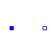
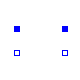
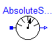
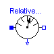
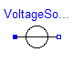
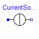
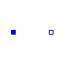
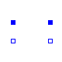
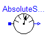
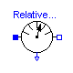
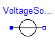
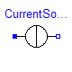
This package contains connectors and interfaces (partial models) for analog electrical components.
Modelica.Electrical.Analog.Interfaces.Pin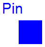
connector Pin "Pin of an electrical component" SI.Voltage v "Potential at the pin"; flow SI.Current i "Current flowing into the pin"; end Pin;

Superclass of elements which have two electrical pins: the positive pin connector p, and the negative pin connector n. It is assumed that the current flowing into pin p is identical to the current flowing out of pin n. This current is provided explicitly as current i.
partial model OnePort "Component with two electrical pins p and n and current i from p to n" SI.Voltage v "Voltage drop between the two pins (= p.v - n.v)"; SI.Current i "Current flowing from pin p to pin n"; PositivePin p; NegativePin n; equation v = p.v - n.v; 0 = p.i + n.i; i = p.i; end OnePort;
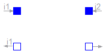
partial model TwoPort "Component with two electrical ports, including current" SI.Voltage v1 "Voltage drop over the left port"; SI.Voltage v2 "Voltage drop over the right port"; SI.Current i1 "Current flowing from pos. to neg. pin of the left port"; SI.Current i2 "Current flowing from pos. to neg. pin of the right port"; PositivePin p1 "Positive pin of the left port"; NegativePin n1 "Negative pin of the left port"; PositivePin p2 "Positive pin of the right port"; NegativePin n2 "Negative pin of the right port"; equation v1 = p1.v - n1.v; v2 = p2.v - n2.v; 0 = p1.i + n1.i; 0 = p2.i + n2.i; i1 = p1.i; i2 = p2.i; end TwoPort;
Modelica.Electrical.Analog.Interfaces.PositivePin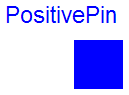
Connectors PositivePin and NegativePin are nearly identical. The only difference is that the icons are different in order to identify more easily the pins of a component. Usually, connector PositivePin is used for the positive and connector NegativePin for the negative pin of an electrical component.
connector PositivePin "Positive pin of an electric component" SI.Voltage v "Potential at the pin"; flow SI.Current i "Current flowing into the pin"; end PositivePin;
Modelica.Electrical.Analog.Interfaces.NegativePin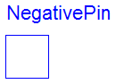
Connectors PositivePin and NegativePin are nearly identical. The only difference is that the icons are different in order to identify more easily the pins of a component. Usually, connector PositivePin is used for the positive and connector NegativePin for the negative pin of an electrical component.
connector NegativePin "Negative pin of an electric component" SI.Voltage v "Potential at the pin"; flow SI.Current i "Current flowing into the pin"; end NegativePin;
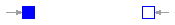
partial model TwoPin "Component with one electrical port" SI.Voltage v "Voltage drop between the two pins (= p.v - n.v)"; PositivePin p "Positive pin"; NegativePin n "Negative pin"; equation v = p.v - n.v; end TwoPin;
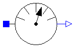
partial model AbsoluteSensor "Base class to measure the absolute value of a pin variable" extends Modelica.Icons.RotationalSensor; PositivePin p "pin to be measured"; Modelica.Blocks.Interfaces.OutPort outPort(final n=1); end AbsoluteSensor;
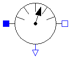
partial model RelativeSensor "Base class to measure a relative variable between two pins" extends Modelica.Icons.RotationalSensor; PositivePin p "positive pin"; NegativePin n "negative pin"; Modelica.Blocks.Interfaces.OutPort outPort(final n=1); end RelativeSensor;
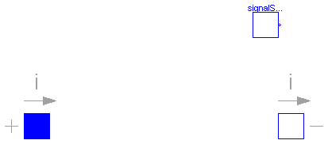
| Name | Default | Description |
|---|---|---|
| offset | 0 | Voltage offset [V] |
| startTime | 0 | Time offset [s] |
| signalSource |
partial model VoltageSource "Interface for voltage sources"
extends OnePort;
parameter SI.Voltage offset=0 "Voltage offset";
parameter SI.Time startTime=0 "Time offset";
replaceable Modelica.Blocks.Interfaces.SignalSource signalSource(final offset={offset}
, final startTime={startTime});
equation
v = signalSource.outPort.signal[1];
end VoltageSource;
| Name | Default | Description |
|---|---|---|
| offset | 0 | Current offset [A] |
| startTime | 0 | Time offset [s] |
| signalSource |
partial model CurrentSource "Interface for current sources"
extends OnePort;
parameter SI.Current offset=0 "Current offset";
parameter SI.Time startTime=0 "Time offset";
replaceable Modelica.Blocks.Interfaces.SignalSource signalSource(final offset={offset}
, final startTime={startTime});
equation
i = signalSource.outPort.signal[1];
end CurrentSource;